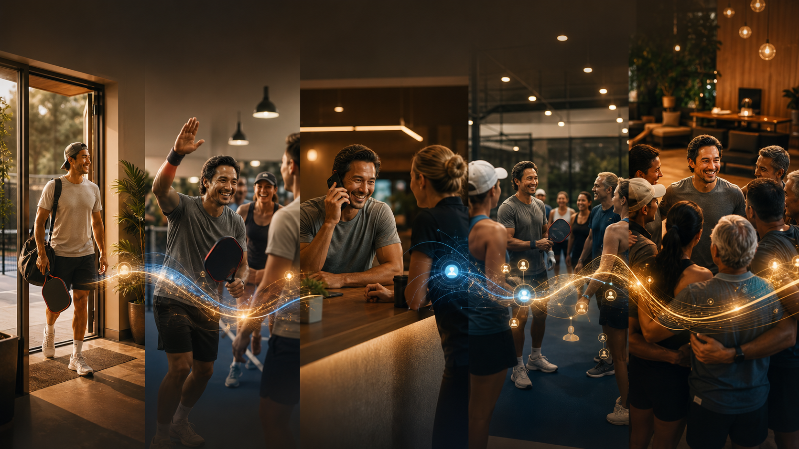
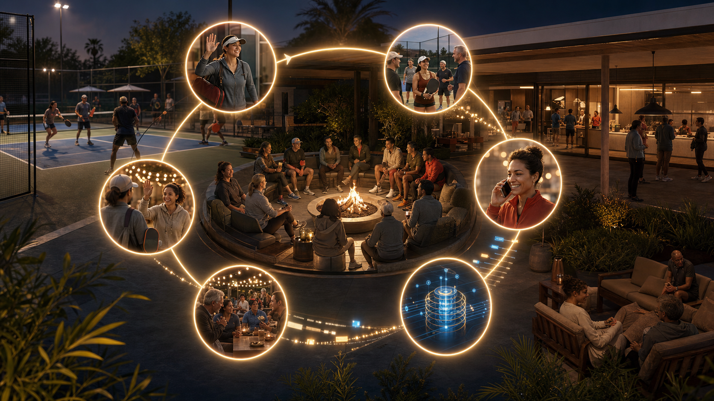

Emotional montageCinematic Journey
Best for a human, premium deck background. Strong arrival-to-community arc, less explicit operating-system logic.
The simplified investor story: a first experience earns trust, a human conversation captures the signal, the system routes the member into better moments, the member feels the connection high, then becomes the leader who creates it for others.

This is the strongest investor image. It shows the community as the center, the member journey as the loop, the phone call as the trust/data moment, and the end state as new leadership.

Emotional montageBest for a human, premium deck background. Strong arrival-to-community arc, less explicit operating-system logic.
Best for showing routing, data, and compounding community intelligence. Stronger product slide, slightly more technical.
Best for the emotional promise. Simple and memorable, but less complete as a full member-journey slide.